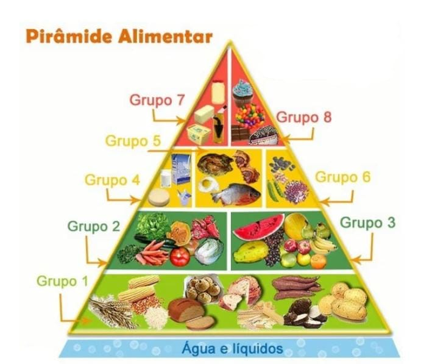

O QUE É DEPENDÊNCIA ALIMENTAR?
A dependência alimentar é um tipo de distúrbio que se caracteriza por diversas causas.
A dependência alimentar é um distúrbio. Ele é classificado assim pelos psicólogos quando a pessoa ingere de
forma exagerada e desnecessária, uma grande quantidade de alimentos.
Mesmo que a pessoa não tenha fome ou vontade de comer, essa dependência alimentar ocorre por fatores
emocionais e psicológicos, perdendo o controle sobre seus impulsos em um curto espaço de tempo.
Passar da conta na comida é normal e acontece com todos, principalmente em festas e feriados. Isso não
caracteriza uma compulsão. Já a dependência alimentar é uma vontade contínua que acomete o paciente por
quase todos os dias.
Como tratar a dependência alimentar
Conforme os demais tipos de transtornos que possuem origem psicoemocional, a dependência alimentar é tratada
clinicamente na avaliação de seu estado de compulsão. Porém, diferentemente de outros quadros, a dependência
alimentar pode ter a ajuda benéfica de outras áreas da saúde como a nutrição e a psiquiatria.
PIRÂMIDE ALIMENTAR

A pirâmide alimentar é um instrumento, sob a forma gráfica, que visa orientar as pessoas para uma dieta mais
saudável. É um guia alimentar geral que demonstra como deve ser a alimentação diária para uma população
saudável, acima de 2 anos de idade.
Cada parte da pirâmide representa um grupo de alimentos e o número de porções recomendadas diariamente. Na
alimentação diária, devemos incluir sempre todos os grupos recomendados para garantir os nutrientes que
nosso organismo necessita. Os alimentos que precisam ser consumidos em maior quantidade estão na base da
pirâmide; os que precisam ser consumidos em menor, no topo.